CV & Citations
- Download CV
- Google Scholar Citations
- For press and media coverage of specific papers, see Press.
Publications
-
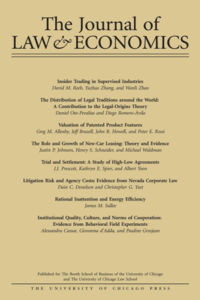
Bayesian Persuasion with Lie Detection with Weicheng Min, Journal of Law and Economics, forthcoming. [BibTeX] [MD] -
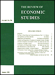
A Tale of Two Networks: Common Ownership and Product Market Rivalry with Bruno Pellegrino, Review of Economic Studies, Vol. 93, No. 3, pp. 1746–1788, May 2026. [BibTeX] [MD]Prizes: Econometric Society 2022 Best Paper Award · ALEA 2023 Best Paper in Antitrust & Competition Policy · Washington Center for Equitable Growth Grant -
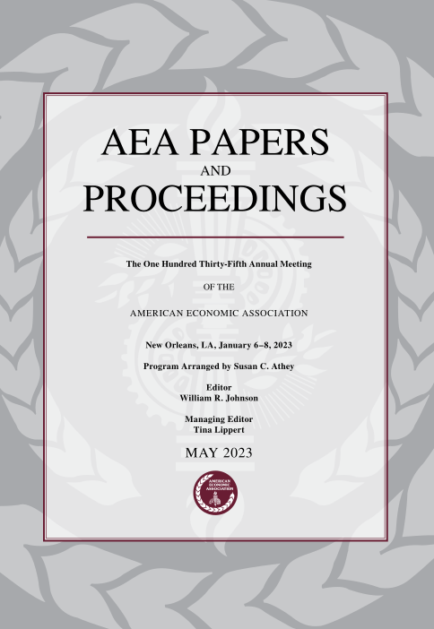
Anonymous Attention and Abuse with Paul Goldsmith-Pinkham and Kyle Jensen, AEA Papers & Proceedings, Vol. 115, pp. 188–94, May 2025. [BibTeX] -
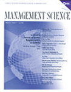
Innovation: The Bright Side of Common Ownership? with Miguel Antón, Mireia Giné, and Martin Schmalz, Management Science, Vol. 71, No. 5, pp. 3713–3733, May 2025. [BibTeX] -
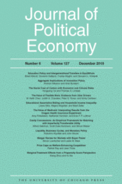
Common Ownership, Competition, and Top Management Incentives with Miguel Antón, Mireia Giné, and Martin Schmalz, Journal of Political Economy, Vol. 131, No. 5, pp. 1294–1355, May 2023. [BibTeX]Prizes: Jerry S. Cohen Award for Antitrust Scholarship 2023 · SIOE Oliver Williamson Best Conference Paper Award · IEAF-FEF Prize for Best Research Paper in Financial Economics -
The Great Start-up Sellout and the Rise of Oligopoly with Bruno Pellegrino, AEA Papers & Proceedings, Vol. 113, pp. 274–278, May 2023. [BibTeX]
-
Mergers and Acquisitions under Common Ownership with Miguel Antón, Mireia Giné, and Bruno Pellegrino, AEA Papers & Proceedings, Vol. 113, pp. 294–98, May 2023. [BibTeX]
-
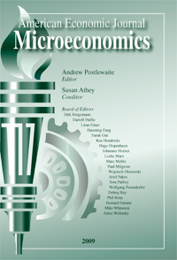
Trust and Promises over Time with Frédéric G. Schneider, American Economic Journal: Microeconomics, Vol. 14, No. 3, pp. 304–320, August 2022. [BibTeX] -
Killer Acquisitions with Colleen Cunningham and Song Ma, Journal of Political Economy, Vol. 129, No. 3, pp. 649–702, March 2021 (lead article). [BibTeX]Prizes: AdC Competition Policy Award · Robert F. Lanzillotti Prize 2020 · Mark A. Satterthwaite Award 2018 · WFA 2018 Best Corporate Finance Paper · Academy of Management Sumantra Ghoshal Research and Practice Award · Jerry S. Cohen Award for Antitrust Scholarship 2021 · ACE Best Paper Award 2022
Selected Policy Impact: White House Executive Order on Promoting Competition · U.S. House Judiciary Committee Report on Competition in Digital Markets · FTC issues 6(b) orders to examine past acquisitions by large tech companies · EU Legislation on Killer Acquisitions · Killer acquisitions call for revamp of China's merger-control threshold -
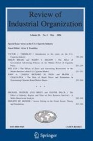
Search Fatigue with Bruce Carlin, Review of Industrial Organization, Vol. 54, No. 3, pp. 485–508, May 2019. [BibTeX] -
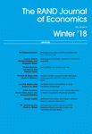
Gaming and Strategic Opacity in Incentive Provision with Richard Holden and Margaret Meyer, RAND Journal of Economics, Vol. 49, No. 4, pp. 819–854, Winter 2018. [BibTeX] -
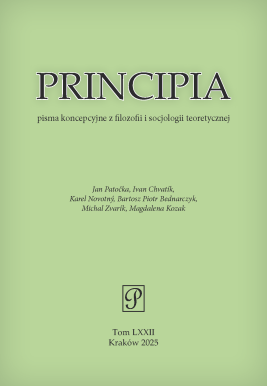
Moral Intuitions of Promise Keeping with Alexander Stremitzer, Principia, Special Issue on Heuristics, Ethics and Epistemology of Law, Vol. LXV, pp. 5–33, December 2018. [BibTeX] -
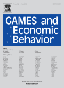
Promises and Expectations with Alexander Stremitzer, Games and Economic Behavior, Vol. 106, pp. 161–178, November 2017. [BibTeX] -
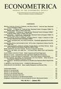
Understanding Mechanisms Underlying Peer Effects: Evidence from a Field Experiment on Financial Decisions with Leonardo Bursztyn, Bruno Ferman, and Noam Yuchtman, Econometrica, Vol. 82, No. 4, pp. 1273–1301, July 2014. [BibTeX]Prizes: Finalist for the Exeter Prize for Behavioral Economics 2015 -
Delay and Deadlines: Freeriding and Information Revelation in Partnerships with Arthur Campbell and Johannes Spinnewijn, American Economic Journal: Microeconomics, Vol. 6, No. 2, pp. 163–204, May 2014. [BibTeX]
-
Is Pay-for-Performance Detrimental to Innovation? with Gustavo Manso, Management Science, Vol. 59, No. 7, pp. 1496–1513, July 2013. [BibTeX]Prizes: Winner 2018 INFORMS TIME Best Paper Award
Downloads: z-Tree Treatments · Instructions · Web Code Version -
Feedback and Motivation in Dynamic Tournaments, Journal of Economics and Management Strategy, Vol. 19, No. 3, pp. 733–769, Fall 2010. [BibTeX]
-
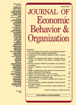
Interpersonal Comparison, Status and Ambition in Organizations with Andrea Patacconi, Journal of Economic Behavior and Organization, Vol. 75, No. 2, pp. 348–363, August 2010. [BibTeX]
Working Papers
- Anonymity and Identity Online with Paul Goldsmith-Pinkham and Kyle Jensen, Revise & Resubmit: Review of Economic Studies. [BibTeX]
- Common Ownership Around the World with Miguel Antón, Mireia Giné, and Guillermo Ramirez-Chiang. [BibTeX]
- Digital (Killer?) Acquisitions with Regina Seibel and Tim Simcoe. [BibTeX]
- Disclosure and the Pace of Drug Development with Colleen Cunningham, Charles Hodgson, and Zhichun Wang. [BibTeX]
- Incentives for Parallel Innovation, Revise & Resubmit: Journal of Law, Economics, and Organization. [BibTeX]
- Deception and Incentives: How Dishonesty Undermines Effort Provision with Ernst Fehr, Revise & Resubmit: Management Science. [BibTeX]
- Common Ownership and Relative Performance Evaluation with Miguel Antón, Mireia Giné, and Martin Schmalz. [BibTeX]
Work in Progress
- "Common Ownership and Collusion" with Vincent Abraham and Catarina Marvão.
- "Mechanisms of Common Ownership" with Weicheng Min and Regina Seibel.
Books & Book Chapters
-
Common Ownership with Isabel Tecu, Antitrust Economics for Lawyers, Chapter 7, LexisNexis Antitrust Law & Strategy Series, 2025. [BibTeX]
-
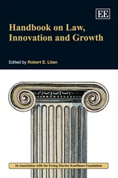
Incentives for Innovation: Bankruptcy, Corporate Governance, and Compensation Systems with Gustavo Manso, Handbook of Law, Innovation, and Growth, Edward Elgar Publishing, March 2011. [BibTeX] -
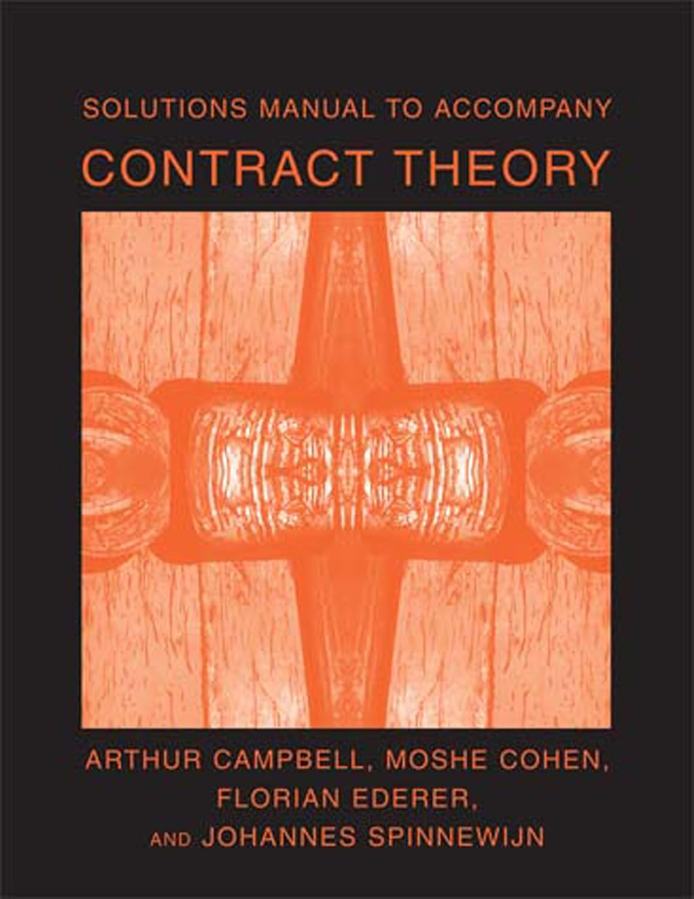
Solutions Manual to Accompany Contract Theory with Arthur Campbell, Moshe Cohen, and Johannes Spinnewijn, MIT Press, September 2007. [BibTeX]
Cases
-
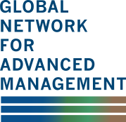
Prodigy Finance with Vero Bourg-Meyer, Javier Gimeno, and Jaan Elias, Global Network Case Studies, 102-17, January 2019.
Other Work
-
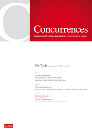
New Findings on Common Ownership and Collusion with Vincent Abraham and Catarina Marvão, Concurrences, N° 1-2026, January 2026. [BibTeX] -
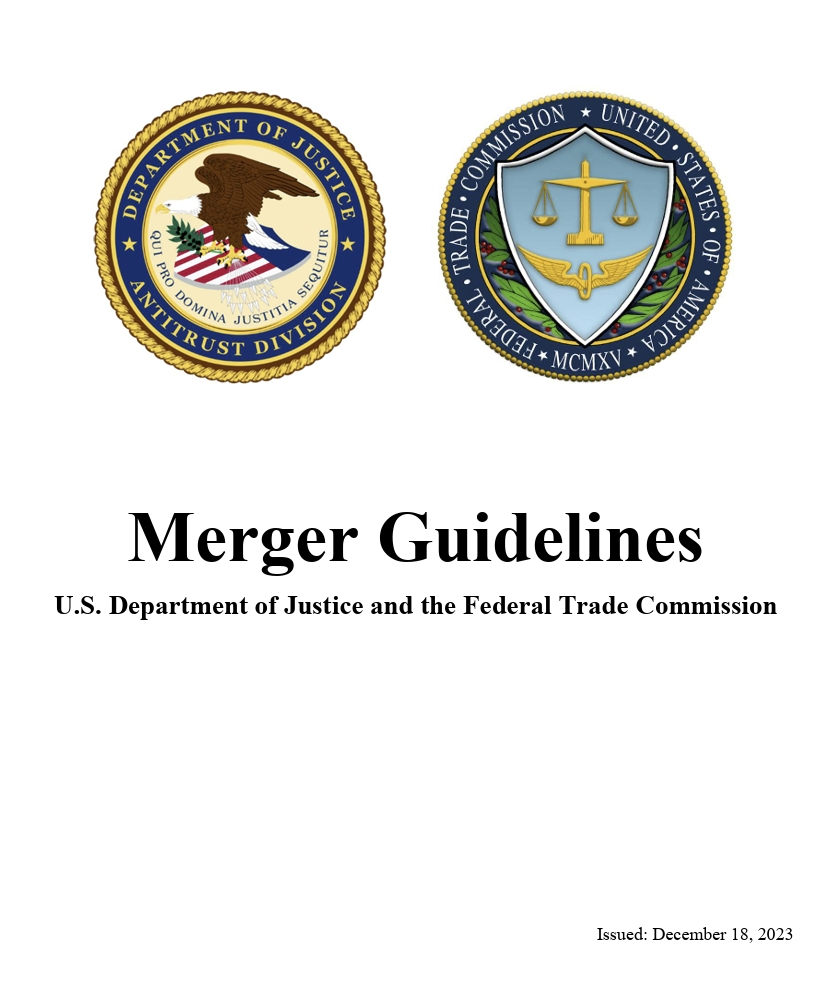
Comment on the Role of Killer Acquisitions in Merger Guidelines with Zaakir Tameez, Revisions to the DOJ-FTC Merger Guidelines, April 2022.
Recent Paper Discussions
- Arbitration as Outside Option: Provider Network Exit and Insurance Design under the No Surprises Act by Panle Jia Barwick et al., IIOC.
- From Free Rider to Innovator: The Rise of China's Drug Development by Panle Jia Barwick et al., AEA Econometric Society Winter Session.
- Interlocking Directorates, Competition, and Innovation by Roma Poberejsky, Harvard-Oxford Conference on Common Ownership.
- Data and Markups by Jan Eeckhout and Laura Veldkamp, Non-Market Effects of Market Power Conference.
- Sharing Models to Interpret Data by Josh Schwartzstein and Adi Sunderam, Utah Winter Organizational and Political Economics Conference.
- Pricing with Algorithms by Rohit Lamba and Sergey Zhuk, NYU IO Day.
- Shelving or Developing? by Chiara Fumagalli, Massimo Motta, and Emanuele Tarantino, Northwestern Antitrust Conference.
- Product Differentiation and Oligopoly: a Network Approach by Bruno Pellegrino, Texas Finance Festival.
- Cost Coordination by Joseph Harrington, IIOC.
- Common Ownership and Competition in the Ready-To-Eat Cereal Industry by Matt Backus, Chris Conlon, and Michael Sinkinson, NBER Industrial Organization.
- Competition and Innovation: The Breakup of IG Farben by Felix Poege, EPFL Virtual Innovation Seminar.
- Optimal Merger Standards for Potential Competition by Abraham Wickelgren, IIOC.
- Who creates new firms when local opportunities arise? by Shai Bernstein et al., Red Rock Finance Conference.